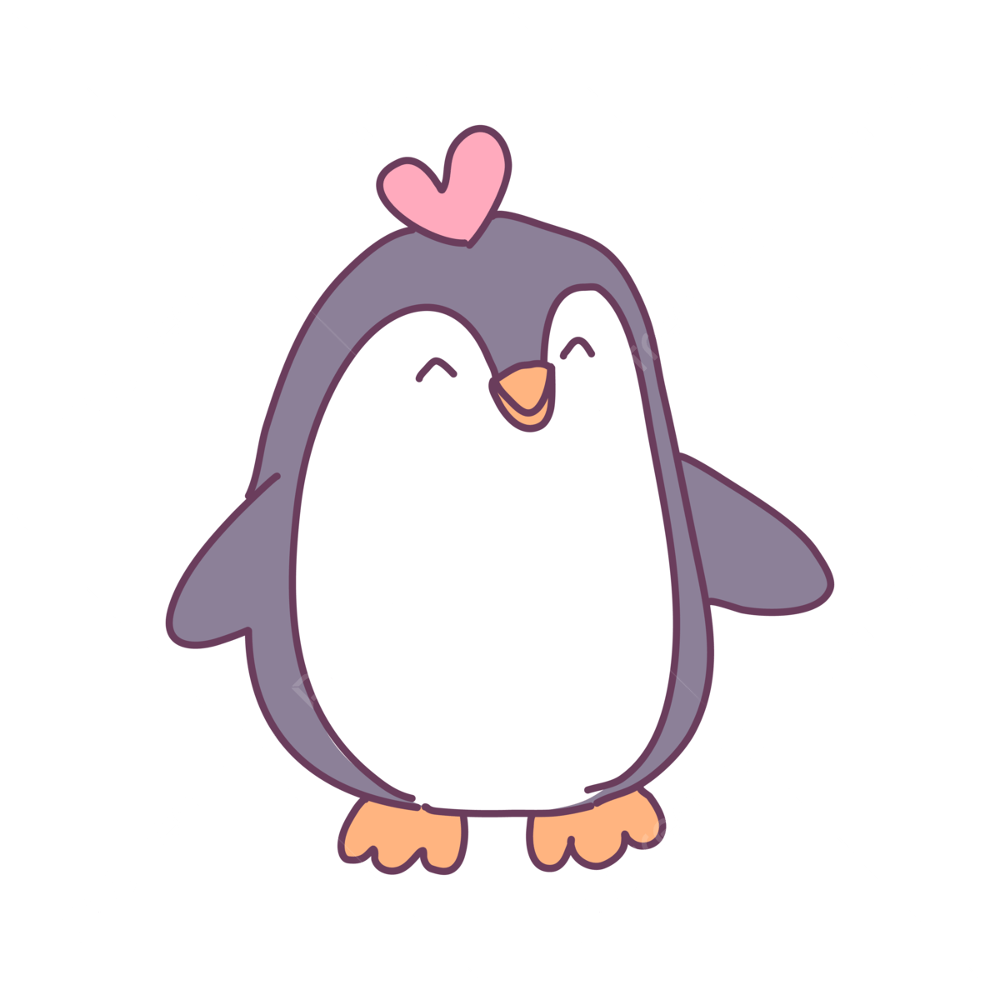

Los pingüinos
Los pingüinos (Spheniscidae) son una familia de aves, la única del orden Sphenisciformes. Son aves marinas, no voladoras, que se distribuyen casi exclusivamente en el hemisferio sur, exceptuando el pingüino de las islas Galápagos (Spheniscus mendiculus). El nombre del orden proviene del vocablo spheniscus, el cual proviene del griego σφήν (sphen, 'cuña'), y el sufijo diminutivo -iscus, literalmente «cuñita», haciendo referencia a su forma hidrodinámica al nadar. Se reconocen al menos dieciocho especies vivas agrupadas en seis géneros, que se distribuyen desde los ambientes polares hasta los tropicales en el hemisferio sur.

Los primeros europeos en observar a estas aves fueron miembros de la primera expedición de Vasco da Gama, que les llamaron pájaros niño o pájaros bobos por su andar torpe y erguido, y por ser un ave incapaz de volar.[cita requerida] Años más tarde, cuando los primeros británicos vieron a estos animales, les llamaron penguins (del galés pen gwyn, «cabeza blanca»), que era el nombre que daban a algunas especies de la familia Alcidae, como al alca gigante del Atlántico norte (Pinguinus impennis), y al alca común (Alca torda). Sin embargo y pese a las aparentes similitudes resultado de la convergencia evolutiva, las alcas del hemisferio norte no están relacionadas con los Spheniscidae. Con el paso del tiempo, ha ido imponiéndose aplicar el apelativo «pingüino» solo a los miembros de la familia Spheniscidae.
Opinión de biólogo
"Mi abuela Melania me había explicado mil cosas de estos animales, pero cuando me vi rodeado de al menos medio millón de ejemplares, sentí una conexión tan profunda que supe que dedicaría mi vida a velar por su futuro"
Cambios climáticos
Por las características del hábitat, uno de los lugares en los que el cambio climático está teniendo un mayor impacto es precisamente en la Antártida, y en concreto una de las especies de pingüinos que parecen estar saliendo peor paradas de la situación son los pingüinos barbijo -Pygoscelis antarcticus- que en los últimos años han visto reducidas sus poblaciones estudiadas en el continente antártico a menos de la mitad que en la década de los 70, pasando en tan solo 50 años de 120.000 parejas reproductoras a tan solo 52.000 aproximadamente
Los Pingüinos no tienen dientes
Los pingüinos se encuentran únicamente en el hemisferio sur
Los pingüinos se originaron en Australia
Existen 18 especies de pingüinos
Son animales ovíparos cuyo periodo de incubación puede prolongarse entre 33 y 62 días. Se comunican a través de su graznido, mediante el cual se reconocen unos a otros, y se alimentan básicamente de peces y plancton. Por lo general viven entre 10 y 20 años en colonias donde pueden haber miles de ejemplares conviviendo.
Nos gustaría conocer tu opinión
Página web por: David Santiago Bolívar / Medellín - Colombia 2024